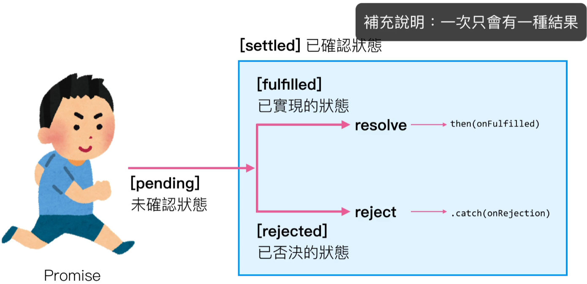
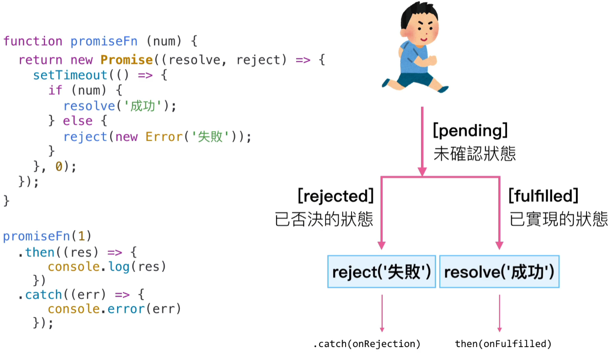

01. intro.html
02. new-promise.html
03. promise-api.html
創立自己的 Promise
一個 Promise 物件處於以下幾種狀態：
- 擱置（pending）：初始狀態，不是 fulfilled 與 rejected。
- 實現（fulfilled）：表示操作成功完成。
- 拒絕（rejected）：表示操作失敗了。


鏈接技巧
1. Promise Chain : 執行若失敗直接轉到 .catch 繼續執行 return
2. .then 同時接收成功 & 失敗結果, 大多數使用成功結果